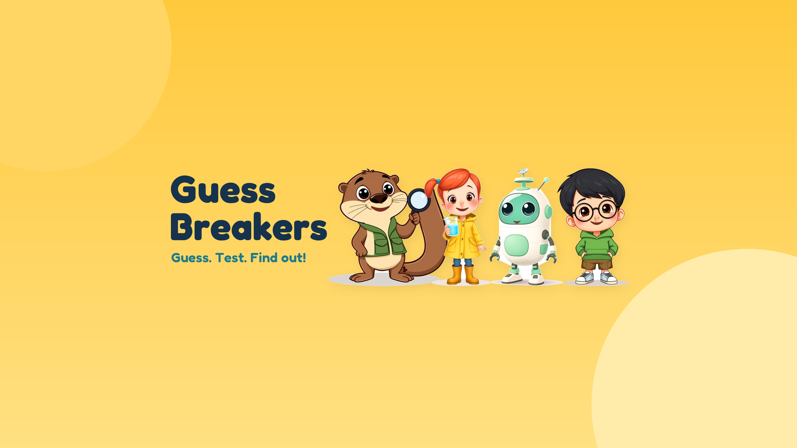

For curious kids, families and classrooms
Guess Breakers
Guess. Test. Find out!
Visit our YouTube channelGuess Breakers makes short animated science mysteries for curious kids around 7–10. Each episode invites a guess, tests an idea, and follows the evidence. Every answer is backed by a real source listed under the video. Demonstrations and reconstructions are labelled honestly, and it’s okay when a guess breaks.
An otter, a girl, a robot and a boy notice clues, compare ideas, measure and connect discoveries to everyday life. New mysteries regularly, for families and classrooms to enjoy together.
Guess. Test. Find out!
For teachers & parents
Free printable activities that go with our episodes, ready for class or home.
For the channel owner
Guess Breakers tools is a desktop app used only by the channel owner to upload private videos, captions and thumbnails, and read channel metadata and aggregated analytics.